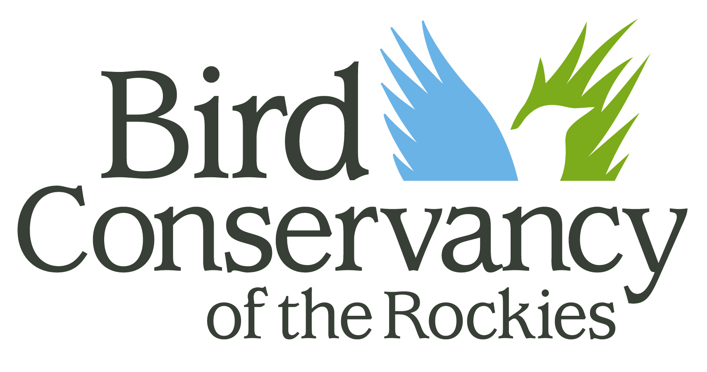

Page size
Margins (in)
Text size (pt)
Show / hide elements
Settings file — use on any browser
Live cloud sync (Firebase)

Urban Birds
of Colorado
of the Rockies
Unlimited

Bird Conservancy
of the Rockies
We believe birds belong here. Wherever here is for you. Our mission is to conserve birds and their habitats through science, education, and land stewardship.
We envision a future where birds remain forever abundant, shaping healthy landscapes and inspiring curiosity and love for the natural world. Sound science guides our work. Stewardship brings it to life. Partnerships keep it going. Together, we are improving native bird populations, the land, and the lives of the people who share it.
Ducks Unlimited
Our mission is to conserve, restore, and manage wetlands and the habitats that surround them for North America’s waterfowl. These same places support other wildlife and people, fueling the natural processes that keep landscapes healthy, resilient, and full of life.
Since 1937, Ducks Unlimited has brought people, expertise, and partnerships together to protect wetlands across North America. Powered by volunteers, guided by science, and carried out through practical, on-the-ground projects, our work creates lasting habitat — protecting the places that sustain waterfowl, strengthen communities, and connect people to the outdoors.
How to use
this guide
This pocket guide introduces the urban birds you’re most likely to spot along Colorado’s Front Range. It doesn’t cover every species in the region — instead, it focuses on the birds you’ll see most often in city parks, backyards, and along urban waterways. Many of these birds live elsewhere in Colorado too, but their urban habits can differ surprisingly from their wild ones.
Species are grouped by family, so hawks appear together, sparrows together, and so on. Each entry includes:
Diet icons
Bird diets are nearly as varied as birds themselves. The icons below show common food sources for Colorado species. Diets shift with the seasons, and most birds are opportunists — so while an icon reflects a typical diet, you may still spot a bird eating something outside it.
Are you ready
to start birding?
The word “birder” used to bring to mind people with the time and gear to travel deep into wild places chasing rare species. The truth is, anyone can be a birder. A birder is simply someone who notices, cares, and learns about birds.
Did you notice those pigeons on your walk to the bus stop? You’re a birder. Did you hear a strange call at the park and look up to find a bird perched on a power line? You’re a birder. Maybe you’ve hung a feeder on your balcony. Welcome to the world of birding.
All it takes is a willingness to notice, wonder, and learn. Binoculars and field guides help, but they aren’t required. We hope this guide helps you get to know your avian neighbors — and inspires you to help them thrive.
Everyday life can pull us away from the natural world, but these feathered neighbors show up even in the busiest cities.
Birding 101
Identifying birds can feel overwhelming at first, but it gets easier fast. Use these clues alongside what you already know.
Conservation
Nearly half of all migratory hotspots, and one-fifth of bird species worldwide, occur in urban areas. Green spaces, rivers, lakes, and even backyards can serve as critical habitat — supplying food, water, and shelter for migrating and resident birds alike. As cities expand, the pressure on these habitats grows, and bird biodiversity suffers globally, even among species that seem common in town.
More than one billion birds die each year from building collisions in the United States alone. Migratory birds are especially vulnerable to nighttime light pollution, which throws off their navigation and often leads to fatal collisions. Feral and domestic cats kill an estimated 2.4 billion birds a year in the U.S. The single biggest threat, though, is habitat loss: as land is broken up or paved over, the food, water, and shelter birds depend on disappears with it.
Birds give us more than something pleasant to watch. They offer ecosystem services we all depend on — pollination, pest control, and seed dispersal. As indicator species, their presence (or absence) tells us whether an ecosystem is healthy. There’s an economic case, too: birders spend billions each year on gear and travel, supporting more than a million jobs in conservation, education, and tourism.
A wetland may be a stopover for migrating birds, but it’s a year-round asset for the community around it. Wetlands slow the flow of water, filter runoff before it reaches rivers and streams, and offer green space close to home. That makes them natural infrastructure: cleaner water, reduced flood risk, and room for nature as the Front Range grows.
A wetland may be a stopover for migrating birds, but it’s a year-round asset for the community around it.
What’s at stake
Without birds, ecosystems would unravel and the natural world would change forever. Beyond their ecological role, birds have value simply as living creatures we share the world with.
As good stewards, we owe it to them to act — and even small steps help, from turning off lights at night to supporting local habitat conservation.
Without birds, ecosystems would unravel and the natural world would change forever.
Bird-friendly living
Bird populations are declining worldwide. A few simple changes to your routine can make a real difference. Seven things you can do:
Food, water,
shelter, space
Habitat loss is the biggest threat birds face — but we can push back by making our yards and shared spaces bird-friendly. Like all living things, birds need four key things.
{{ p.label }}
Identity{{ p.id }}
Habitat{{ p.habitat }}
Behavior{{ p.behavior }}
Get involved
You’ve spent time getting to know the birds that share your city. Now you can help make sure they stick around.
Bird Conservancy of the Rockies and Ducks Unlimited lead the work that keeps Colorado’s birds and habitats thriving — and both welcome new supporters at every level.
Bird Conservancy
of the Rockies
Headquartered in Brighton, Colorado, Bird Conservancy has worked for decades to study, protect, and advocate for the birds you’ve met in this guide — putting science to work on the ground from the Front Range to the Great Plains, Mexico, and beyond.
Ducks Unlimited
Ducks Unlimited’s work runs on a grassroots network of people who care about wetlands, waterfowl, and the outdoors. Across Colorado, local chapters bring volunteers and supporters together to build community, raise awareness, and fund habitat conservation.
City Birds
Eighty-two of the birds you’re most likely to meet in town — on park ponds, at the feeder, overhead, and in the hedge. Grouped, color-coded, and built to fit a pocket.